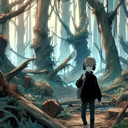
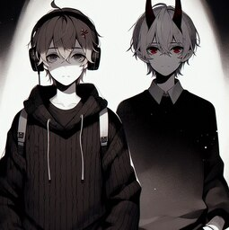
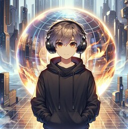

Заметка HFTems. Лес Кешью.
Раньше лес Кешью был очень красив, говорят в нём росли растения из-за всех миров. Мир процветал и в нём жила легендарная раса "Друиды леса Кешью", эти друиды всем друидам друиды, в их жилах течет кровь первого творца "Терра". Но сейчас данный мир мёртв. Сферу огня украли еще до того, как наша компания пришла. Из-за этого растения перестали получать необходимую силу и погибли. Местные жители - друиды покинули мир. В наше время мир используют преступники, ради сделок. Но я пришёл дабы найти цветок "Согу". Как сказал брат Зерона Морок, этот цветок питает само время и он способен очистить Нату и её демона Лауффи, где демон должен будет стать что-то вроде простой душой, но с остаточной силой ангела. Только вот Ната - друид, что будет когда душа ангела и друида соединиться? Когда я был в библиотеке Империй, я читал о такое расе, как девасида. Такая раса появляется после соединения души друида и ангела. Хм, пока не менее, это единственный способ сохранить души Наты и демона.
Заметка HFTems. Сделка с дьяволом.
Когда-то Клан Алые Тени был мощнейшей организацией, известной своими профессиональными убийцами. Говорят, что даже сам Предатор был членом этой загадочной группы. Но Империя, стремясь к власти, истребила все подобные кланы, оставив за собой лишь пустующие деревни и города, полные тайн и заброшенных артефактов. Ната и я обожали исследовать эти заброшенные места, надеясь найти что-то уникальное. В одном из таких походов мы наткнулись на артефакты Алых Теней. Среди них был "Кровавый цветок", который мог исцелять, но только за счет жизни других; клинок "Абе но Хаторе", который носили элитные ассасины; и маска "Абе но Хабакире", внушавшая ужас врагам. Эти маски выглядели как демоны с золотыми рогами и зубами, и мы не смогли устоять перед их притяжением. Ната даже начала носить одежду, соответствующую образу с маской. Но меня смущало другое: маски выглядели как новые, будто их только что сделали. И вскоре я узнал, что это не случайность. В них были заточены демоны Лауффи и Зерон. Когда я надел маску Зерона, я почувствовал, как теряю рассудок. Ната же страдала еще больше: она падала на ровном месте и начала гнить. Каждую ночь, когда я ложился спать, я переносился в черный мир, где встречал самого Зерона. Он рассказал мне о своей сестре Лауффи и проклятии, наложенном на них Безной. Зерон был обманут, когда ему сказали, что если он убьет Империя, его семья вернется. Но он знал, что это ложь. Зерон предложил мне сделку: я помогу ему очистить сестру и сразиться с Бездной, а он даст мне знания, позволяющие ходить сквозь пространство и время. Сделка с дьяволом... Империя предлагала мне сражаться бок о бок с ними, против Бездны. Хм, это будет весело.
Заметка HFTems. Союз с Империей.
Компания Heart of Fire заботиться о вас! Данную фразу знает каждый человек, эльф или ангел во всей мульти вселенной. Эту компанию создавал я вместе с друидкой Натой. Наша компания занимается технологиями. Создает оружия, импланты, игрушки для кошек, и просто технику для быта. Недавно мы смогли создать сферу энергий, благодаря которой мы могли хранить гугол мегавольт энергий. И данное изобретение заметила сама Империя. Империя что хранить всю мультивсленную пришла ко мне во офис. Империй – глава клана Империя, хотел сделать мне предложение. С помощью нашего изобретения мы бы могли сохранять «Сердца Огня», так называют центры миров. Благодаря этому центру миры и могу существовать. Минус этих сфер, в том что их сила (пламя) рассеивается, уходя в некуда. Наше изобретение должно было это решить, дав миров дополнительные миллионы лет жизни. Империя же обеспечила всем чем надо компанию. Предложение я сразу принял.